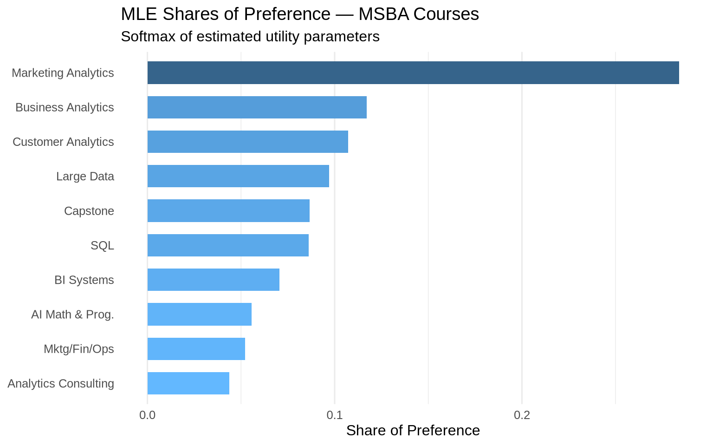
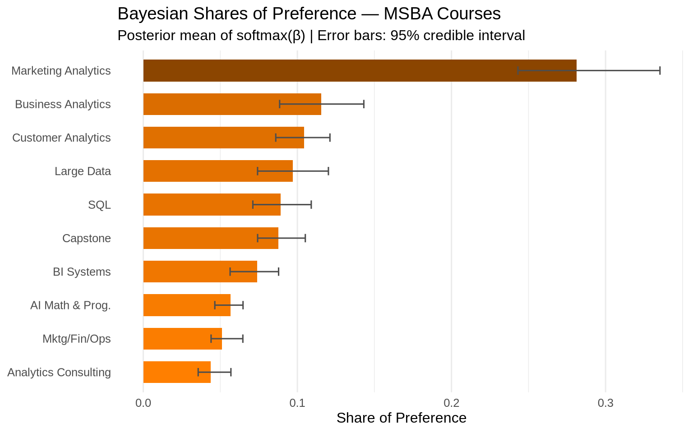
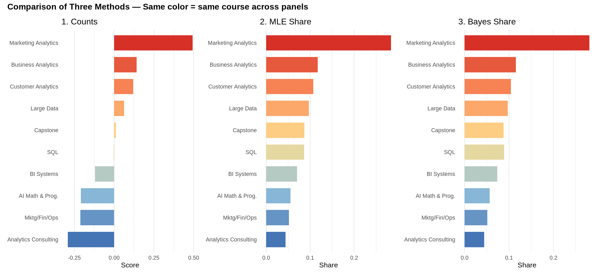

Counts, MLE, and Bayesian estimation of the MNL model
Author
Shalini Harwalkar
Published
May 28, 2026
Introduction
This post analyzes data from a Best-Worst Scaling (MaxDiff) survey in which MSBA students ranked their preferences across the 10 core MSBA courses at UCSD Rady.
What is MaxDiff? MaxDiff is a survey methodology designed to measure relative preferences with high precision. On each screen of the survey, respondents see a small subset of items — here, 4 classes — and select both the most preferred and the least preferred from that set. They repeat this across many screens, each showing a different combination of items. The resulting data reveal how much respondents prefer each item relative to every other.
Why not just use a 1–10 rating scale? Humans are surprisingly good at making comparative trade-offs (“which is best, which is worst?”) but notoriously inconsistent when assigning numbers to abstract concepts. Rating scales suffer from scale-use bias — some people anchor at 7, others at 5 — making cross-respondent comparisons unreliable. MaxDiff sidesteps this by forcing real choices: every “best” pick reveals information about the three items that were not picked, giving us far more signal per question.
The 10 items here are the 10 core MSBA courses. Our goal is to estimate each course’s relative preference using three methods of increasing sophistication:
Counts analysis — a fast, intuitive score based on raw pick frequencies
MNL via Maximum Likelihood — a statistically rigorous point estimate of preference utilities
MNL via Bayesian (MCMC) estimation — the same model, but returning a full posterior distribution over utilities
All three methods should agree on the broad ranking. They differ in how they quantify preference strength and uncertainty. I expect applied analytics courses, such as Customer Analytics, Business Analytics, or the Capstone, to rank highly, while more tooling-focused courses may cluster lower. Let’s find out.
TipKey findings
Customer Analytics and Business Analytics rank highest across all three methods. SQL and BI Systems rank near the bottom. The middle group is less certain, with several courses having overlapping uncertainty intervals and small differences in estimated preference shares.
The Data
Show code
library(tidyverse)library(knitr)library(kableExtra)# Read datadf <-read_csv("maxdiff_design_and_choices.csv", show_col_types =FALSE)labels_raw <-read_csv("maxdiff_item_labels.csv", show_col_types =FALSE)# Clean up labelslabels <- labels_raw |>select(item =`Item #`, label = Item) |>filter(!is.na(item)) |>mutate(short_label =case_when( item ==1~"AI Math & Prog.", item ==2~"SQL", item ==3~"Mktg/Fin/Ops", item ==4~"Large Data", item ==5~"Business Analytics", item ==6~"Analytics Consulting", item ==7~"Customer Analytics", item ==8~"Capstone", item ==9~"Marketing Analytics", item ==10~"BI Systems",TRUE~paste("Item", item) ) ) |>arrange(item)# Filter to "clean" tasks: exactly 4 items from 1-10, one best, one worst# Item 11 appears in some tasks as a special option, so those tasks are excludedclean_df <- df |>group_by(`Record ID`, Task) |>filter(n() ==4,all(Item %in%1:10),sum(Response ==1) ==1,sum(Response ==-1) ==1 ) |>ungroup()# Basic descriptivesN <-n_distinct(clean_df$`Record ID`)tasks_per_resp <- clean_df |>distinct(`Record ID`, Task) |>count(`Record ID`) |>pull(n) |>unique()T_per_resp <- tasks_per_respJ_per_task <-4J_total <-10total_tasks <-n_distinct(clean_df$`Record ID`, clean_df$Task)cat("Number of respondents (N):", N, "\n")
Number of respondents (N): 85
Show code
cat("Tasks per respondent (T):", T_per_resp, "\n")
Tasks per respondent (T): 8
Show code
cat("Items per task (J):", J_per_task, "\n")
Items per task (J): 4
Show code
cat("Total items in study:", J_total, "\n")
Total items in study: 10
Show code
cat("Total clean tasks:", total_tasks, "\n")
Total clean tasks: 680
Note on the data: The raw file contains 15 tasks per respondent, but 7 of those tasks include a special “Item 11” and have fewer than 4 items or no ‘worst’ response. Because Item 11 appears to function differently from the 10 core course items, we restrict the analysis to the 680 fully formed tasks containing only Items 1–10 and exactly one best and one worst response.
Show code
# Sanity check: every task has exactly 1 best, 1 worst, 2 neutralsanity <- clean_df |>group_by(`Record ID`, Task) |>summarise(n_best =sum(Response ==1),n_worst =sum(Response ==-1),n_zero =sum(Response ==0),n_items =n(),.groups ="drop" )stopifnot(all(sanity$n_best ==1))stopifnot(all(sanity$n_worst ==1))stopifnot(all(sanity$n_zero ==2))stopifnot(all(sanity$n_items ==4))cat("✓ Sanity check passed: every task has exactly 1 best, 1 worst, 2 neutral, and 4 items.\n")
✓ Sanity check passed: every task has exactly 1 best, 1 worst, 2 neutral, and 4 items.
Show code
# How often was each item shown?exposure <- clean_df |>count(Item) |>left_join(labels, by =c("Item"="item")) |>arrange(Item)kable( exposure |>select(Item, short_label, n),col.names =c("Item #", "Class", "Times Shown"),caption ="Exposure count per item across all clean tasks") |>kable_styling(bootstrap_options =c("striped", "hover"), full_width =FALSE)
Exposure count per item across all clean tasks
Item #
Class
Times Shown
1
AI Math & Prog.
273
2
SQL
274
3
Mktg/Fin/Ops
272
4
Large Data
276
5
Business Analytics
270
6
Analytics Consulting
267
7
Customer Analytics
276
8
Capstone
272
9
Marketing Analytics
274
10
BI Systems
266
The exposure counts are reasonably balanced across items, as expected from a proper MaxDiff design.
Counts Analysis
The simplest way to summarize MaxDiff data is a counts score. For each item \(j\), we compute:
where (B_j) is the number of times course (j) was picked best, (W_j) is the number of times it was picked worst, and (S_j) is the number of times it was shown.
A score near +1 means the item is almost always chosen as best when it appears; near −1 means it is almost always chosen as worst; near 0 means it is somewhere in the middle. This is intuitive and fast to compute — no model required. The downside is that it ignores who the competition was in each task; being picked best when shown alongside weak alternatives inflates the score compared to being picked best in tough company. The MNL model in the next section corrects for this.
Observations: Customer Analytics and Business Analytics lead the pack with strongly positive scores, while BI Systems and SQL rank near the bottom. The Capstone and Marketing Analytics sit in the middle with scores near zero, suggesting either mixed preferences or generally moderate appeal. The bootstrap confidence intervals reveal that the top two and bottom two positions are reasonably well-separated, but the middle-tier courses have overlapping intervals, meaning their relative ranking is uncertain from counts alone.
From MaxDiff Data to MNL Choices
Before fitting a model, we need to understand how MaxDiff data plugs into the Multinomial Logit (MNL) framework.
The MNL model assigns each course \(j\) a utility parameter \(\beta_j\). When a respondent sees a set of 4 courses \(\{a, b, c, d\}\), the probability they pick course \(b\) as best follows a softmax:
After picking the best, the respondent picks the worst from the remaining 3 items. The key insight is that picking “worst” is equivalent to picking best on a negatively valued version — the course with the lowest utility. So we flip the signs and apply softmax again:
\[
P(\text{worst} = c \mid \text{best} = b) =
\frac{\exp(-\beta_c)}
{\exp(-\beta_a) + \exp(-\beta_c) + \exp(-\beta_d)}
\]
Each task therefore yields two MNL observations: one for the best pick from 4 items and one for the worst pick from the remaining 3. This doubles our data compared to a best-only design.
Identifiability: The softmax is invariant to adding a constant to all \(\beta\)’s — only differences between utilities are identified. We fix \(\beta_1 = 0\) with AI Math & Programming as the reference item, and estimate \(\beta_2, \ldots, \beta_{10}\). All reported utilities are relative to Item 1.
Show code
# Reshape into a compact format: one row per tasktask_data <- clean_df |>group_by(`Record ID`, Task) |>summarise(items =list(Item),best_item = Item[Response ==1],worst_item = Item[Response ==-1],.groups ="drop" )# Convert to matrix form for fast likelihood computationitems_mat <-do.call(rbind, task_data$items)best_vec <- task_data$best_itemworst_vec <- task_data$worst_itemn_tasks <-nrow(task_data)cat("Total tasks for likelihood:", n_tasks, "\n")
Total tasks for likelihood: 680
Show code
cat("Items matrix dim:", dim(items_mat), "\n")
Items matrix dim: 680 4
MNL via Maximum Likelihood
The log-likelihood sums over all tasks. For each task, we get two terms — one for the best pick and one for the worst pick from the remaining 3 items, using negated utilities:
MLE estimates of MNL utilities and shares of preference (Item 1 = reference)
Item #
Class
β
|SE(β̂
| Share of Pre
9
Marketing Analytics
1.630
0.146
0.2839
5
Business Analytics
0.744
0.142
0.1171
7
Customer Analytics
0.656
0.142
0.1072
4
Large Data
0.555
0.14
0.0969
8
Capstone
0.443
0.14
0.0867
2
SQL
0.438
0.137
0.0862
10
BI Systems
0.236
0.137
0.0704
1
AI Math & Prog.
0.000
(ref)
0.0556
3
Mktg/Fin/Ops
-0.067
0.139
0.0520
6
Analytics Consulting
-0.239
0.141
0.0438
Show code
mle_results |>mutate(short_label =fct_reorder(short_label, share)) |>ggplot(aes(x = share, y = short_label)) +geom_col(aes(fill = share), width =0.65) +scale_fill_gradient(low ="steelblue1", high ="steelblue4", guide ="none") +labs(title ="MLE Shares of Preference — MSBA Courses",subtitle ="Softmax of estimated utility parameters",x ="Share of Preference",y =NULL ) +theme_minimal(base_size =12) +theme(panel.grid.major.y =element_blank())

Comparing MLE to Counts: The rankings are broadly consistent — Customer Analytics and Business Analytics lead both analyses, while SQL and BI Systems fall near the bottom. The main difference is that MLE accounts for the choice set. A course that was repeatedly shown alongside strong competitors and still got picked a reasonable fraction of the time can receive a higher estimated utility than its counts score alone would suggest.
MNL via Bayesian Estimation
We now fit the exact same MNL model using a Metropolis-Hastings (MH) sampler. Instead of a single point estimate, the Bayesian approach returns a posterior distribution over \(\boldsymbol{\beta}\), capturing parameter uncertainty in full.
The posterior is proportional to the likelihood times the prior:
We use a weakly informative prior: \(\boldsymbol{\beta} \sim \mathcal{N}(\mathbf{0}, 10I)\), which places roughly 95% of the prior mass on utilities between −6 and +6 — wide enough to avoid strongly constraining realistic preferences.
The random-walk MH sampler works by proposing a small perturbation to the current \(\boldsymbol{\beta}\), computing the log posterior ratio, and accepting or rejecting via a random draw weighted by that ratio. Over many iterations, the accepted draws trace out the posterior.
The selected trace plots look reasonably stable after burn-in, with no obvious long-term drift. A more formal Bayesian analysis would run multiple chains and check diagnostics such as effective sample size and (), but for this blog-level analysis the sampler appears adequate.
Show code
# Full beta matrix with item 1 fixed at 0post_full <-cbind(0, post_draws)# Posterior means and credible intervals for betabeta_post_mean <-colMeans(post_full)beta_post_ci <-apply(post_full, 2, quantile, probs =c(0.025, 0.975))# Posterior shares of preferencecompute_shares <-function(beta_vec) {exp(beta_vec) /sum(exp(beta_vec))}post_shares <-t(apply(post_full, 1, compute_shares))share_post_mean <-colMeans(post_shares)share_post_ci <-apply(post_shares, 2, quantile, probs =c(0.025, 0.975))bayes_results <- labels |>mutate(beta_mean = beta_post_mean,ci_lo_beta = beta_post_ci["2.5%", ],ci_hi_beta = beta_post_ci["97.5%", ],share_mean = share_post_mean,ci_lo_share = share_post_ci["2.5%", ],ci_hi_share = share_post_ci["97.5%", ] ) |>arrange(desc(share_mean))
Show code
bayes_results |>mutate(beta_str =sprintf("%.3f", beta_mean),ci_str =sprintf("[%.3f, %.3f]", ci_lo_beta, ci_hi_beta),share_str =sprintf("%.4f", share_mean),ci_share_str =sprintf("[%.4f, %.4f]", ci_lo_share, ci_hi_share) ) |>select(item, short_label, beta_str, ci_str, share_str, ci_share_str) |>kable(col.names =c("Item #", "Class", "Post. Mean β", "95% CI (β)","Post. Mean Share", "95% CI (Share)"),caption ="Bayesian MNL: posterior means and 95% credible intervals" ) |>kable_styling(bootstrap_options =c("striped", "hover"), full_width =FALSE)
Bayesian MNL: posterior means and 95% credible intervals
Item #
Class
Post. Mean β
95% CI (β)
Post. Mean Share
95% CI (Share)
9
Marketing Analytics
1.601
[1.380, 1.807]
0.2811
[0.2431, 0.3353]
5
Business Analytics
0.708
[0.367, 1.004]
0.1155
[0.0885, 0.1431]
7
Customer Analytics
0.609
[0.361, 0.786]
0.1044
[0.0860, 0.1211]
4
Large Data
0.531
[0.139, 0.951]
0.0969
[0.0742, 0.1201]
2
SQL
0.450
[0.228, 0.714]
0.0891
[0.0711, 0.1090]
8
Capstone
0.434
[0.211, 0.685]
0.0876
[0.0742, 0.1052]
10
BI Systems
0.262
[-0.015, 0.519]
0.0738
[0.0564, 0.0878]
1
AI Math & Prog.
0.000
[0.000, 0.000]
0.0567
[0.0464, 0.0647]
3
Mktg/Fin/Ops
-0.105
[-0.277, 0.096]
0.0511
[0.0440, 0.0646]
6
Analytics Consulting
-0.261
[-0.487, 0.001]
0.0438
[0.0356, 0.0569]
Show code
bayes_results |>mutate(short_label =fct_reorder(short_label, share_mean)) |>ggplot(aes(x = share_mean, y = short_label)) +geom_col(aes(fill = share_mean), width =0.65) +geom_errorbarh(aes(xmin = ci_lo_share, xmax = ci_hi_share),height =0.25,color ="gray30" ) +scale_fill_gradient(low ="darkorange1", high ="darkorange4", guide ="none") +labs(title ="Bayesian Shares of Preference — MSBA Courses",subtitle ="Posterior mean of softmax(β) | Error bars: 95% credible interval",x ="Share of Preference",y =NULL ) +theme_minimal(base_size =12) +theme(panel.grid.major.y =element_blank())

Comparing Bayes to MLE: The posterior means are very close to the MLE point estimates — this is expected because with 680 tasks and a diffuse prior, the likelihood dominates. One practical advantage of the Bayesian approach is that the shares have credible intervals derived directly from the MCMC draws, with no delta-method approximation needed.
Comparing the Three Methods
Show code
# Merge all three results into one tablecounts_ranked <- counts |>arrange(desc(score)) |>mutate(counts_rank =row_number()) |>select(item = Item, score, counts_rank)mle_ranked <- mle_results |>arrange(desc(share)) |>mutate(mle_rank =row_number()) |>select(item, mle_share = share, mle_rank)bayes_ranked <- bayes_results |>arrange(desc(share_mean)) |>mutate(bayes_rank =row_number()) |>select(item, bayes_share = share_mean, bayes_rank)comparison <- labels |>left_join(counts_ranked, by ="item") |>left_join(mle_ranked, by ="item") |>left_join(bayes_ranked, by ="item") |>arrange(mle_rank) |>mutate(score =round(score, 3),mle_share =round(mle_share, 4),bayes_share =round(bayes_share, 4) )comparison |>select(short_label, score, counts_rank, mle_share, mle_rank, bayes_share, bayes_rank) |>kable(col.names =c("Class", "Counts Score", "Counts Rank","MLE Share", "MLE Rank", "Bayes Share", "Bayes Rank"),caption ="Side-by-side comparison of all three methods (sorted by MLE rank)" ) |>kable_styling(bootstrap_options =c("striped", "hover"), full_width =FALSE)
Side-by-side comparison of all three methods (sorted by MLE rank)
Class
Counts Score
Counts Rank
MLE Share
MLE Rank
Bayes Share
Bayes Rank
Marketing Analytics
0.493
1
0.2839
1
0.2811
1
Business Analytics
0.141
2
0.1171
2
0.1155
2
Customer Analytics
0.120
3
0.1072
3
0.1044
3
Large Data
0.062
4
0.0969
4
0.0969
4
Capstone
0.011
5
0.0867
5
0.0876
6
SQL
-0.004
6
0.0862
6
0.0891
5
BI Systems
-0.120
7
0.0704
7
0.0738
7
AI Math & Prog.
-0.209
8
0.0556
8
0.0567
8
Mktg/Fin/Ops
-0.213
9
0.0520
9
0.0511
9
Analytics Consulting
-0.292
10
0.0438
10
0.0438
10
Show code
# Three-panel bar chart with consistent coloringlibrary(patchwork)item_order_mle <- mle_results |>arrange(share) |>pull(short_label)color_map <-setNames(colorRampPalette(c("#d73027", "#fc8d59", "#fee090", "#91bfdb", "#4575b4"))(10),rev(item_order_mle))p_counts <- comparison |>mutate(short_label =factor(short_label, levels = item_order_mle)) |>ggplot(aes(x = score, y = short_label, fill = short_label)) +geom_col(width =0.7) +scale_fill_manual(values = color_map, guide ="none") +labs(title ="1. Counts", x ="Score", y =NULL) +theme_minimal(base_size =10) +theme(panel.grid.major.y =element_blank())p_mle <- comparison |>mutate(short_label =factor(short_label, levels = item_order_mle)) |>ggplot(aes(x = mle_share, y = short_label, fill = short_label)) +geom_col(width =0.7) +scale_fill_manual(values = color_map, guide ="none") +labs(title ="2. MLE Share", x ="Share", y =NULL) +theme_minimal(base_size =10) +theme(panel.grid.major.y =element_blank())p_bayes <- comparison |>mutate(short_label =factor(short_label, levels = item_order_mle)) |>ggplot(aes(x = bayes_share, y = short_label, fill = short_label)) +geom_col(width =0.7) +scale_fill_manual(values = color_map, guide ="none") +labs(title ="3. Bayes Share", x ="Share", y =NULL) +theme_minimal(base_size =10) +theme(panel.grid.major.y =element_blank())p_counts + p_mle + p_bayes +plot_annotation(title ="Comparison of Three Methods — Same color = same course across panels",theme =theme(plot.title =element_text(size =12, face ="bold")) )

Discussion of the comparison:
The three methods tell a very consistent story at the extremes. Customer Analytics and Business Analytics rank first and second by all three methods; SQL and BI Systems consistently fall near the bottom. This stability at the tails gives us confidence in the main conclusion: in this sample, students appear to prefer applied analytics courses more strongly than database/tooling-focused courses.
The middle of the ranking is where methods diverge slightly. Mktg/Fin/Ops and Analytics Consulting swap positions between methods, as do Capstone and Marketing Analytics. This is expected: when underlying utilities are close together, small differences in how each method handles noise and competition can flip adjacent ranks.
What does MNL add over counts? The MNL model explicitly accounts for the choice set — not just “was this item picked?” but “given the alternatives it was shown with, how surprising is the pick?” A course that was repeatedly shown alongside very strong competitors and still got picked a reasonable fraction of the time will get a higher MLE utility than its counts score alone would suggest.
What does Bayes add over MLE? The Bayesian approach makes it straightforward to compute credible intervals on nonlinear functions of \(\boldsymbol{\beta}\), like the shares of preference. We simply compute the shares for every MCMC draw and take quantiles — no delta method needed. If we wanted to ask “how confident are we that Customer Analytics beats Business Analytics?”, Bayes answers this directly: count the fraction of draws where \(\beta_7 > \beta_5\).
Discussion
For a non-technical reader: In this sample, MSBA students most prefer courses that feel directly applicable to modern analytics roles — Customer Analytics and Business Analytics score highest across all three methods. The Capstone, which involves real client work, ranks in the upper-middle. Students appear less enthusiastic about tooling-heavy courses like SQL and BI Systems, perhaps because these are perceived as foundational prerequisites rather than differentiating career skills.
Which method for which question?
Counts analysis is ideal for a quick executive dashboard or a first look at the data. It takes seconds to compute and produces an instantly interpretable score. Its weakness is that it ignores the competitive context of each task.
MLE MNL is the right choice when you need a single, statistically rigorous number to report — for example, to compare two courses formally with a standard error, or to input into a downstream market simulation. It is fast to optimize and provides Hessian-based standard errors for the utility parameters.
Bayesian MNL shines when you want uncertainty on derived quantities such as shares, differences between courses, or “what if we removed one class?” scenarios without approximation. It is also useful when extending the model hierarchically to estimate individual-level preferences. Here, the posterior means and MLE estimates are nearly identical because the dataset is reasonably large and the prior is diffuse, but the Bayesian framework would become more valuable in smaller samples or more complex models.
Caveats: The survey was taken by a self-selected sample of MSBA students who may differ from future cohorts. Preferences are likely shaped by prior coursework, current quarter in the program, and familiarity with the faculty — none of which we can control for with aggregate data.
What’s next? With more time, I would fit a hierarchical or mixed MNL model to estimate individual-level \(\beta_j\)’s, allowing us to segment students into preference clusters such as “quant-focused” versus “applied” learners. I would also explore whether preferences differ by prior background, such as CS versus business undergraduate training, or by quarter in the program.